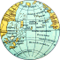
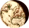

 Here is the map
English
Deutsch
Français
Nederlands
Português do Brasil
Česky
Español (Castellano)
Galego
Română
Türk
ру́сский
Dansk
Polski
日本語
magyar
한국어
українська
Italiano
Historic.Place Wiki
Historic.Place Wiki
Historic.Place Wiki
Historic.Place Wiki
OpenStreetMap Wiki
Geschichtskarten Wiki
Special maps
 Overview of available historical maps
Sühnesteine
Stolpersteine
CheckTheMonuments
Königlich-Sächsische_Triangulation
Grenzsteine KS/KP 1815
Grenzsteine Belgien/Preußen 1815
Meilensteine
Umgebindehaus
Preußische optische Telegrafie
Bismarcktürme
GRSL
Contact
What's new?
Facebook group
 English
English Deutsch
Deutsch Français
Français Nederlands
Nederlands Português do Brasil
Português do Brasil Česky
Česky Español (Castellano)
Español (Castellano) Galego
Galego Română
Română Türk
Türk ру́сский
ру́сский Dansk
Dansk Polski
Polski 日本語
日本語 magyar
magyar 한국어
한국어 українська
українська Italiano
Italiano Stolpersteine
Stolpersteine